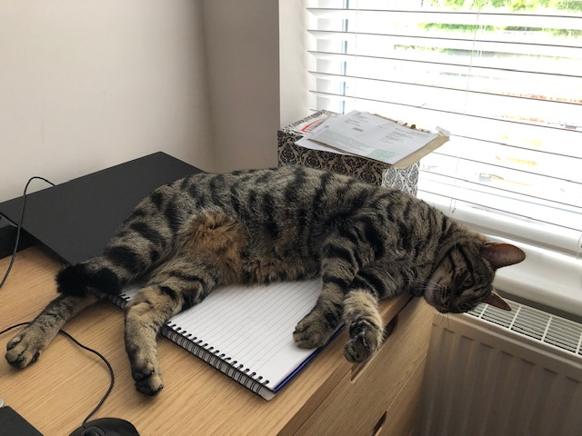

P - Use this to add any text that you want on your page
Q - indicates that the enclosed text is a short inline quotation. Will put the text in quotation marks
Code - use this to display text that it represented as code
Br - creates line break
Strong Puts words in bold
Compartmentalisation
Div - Generic container for flow content. It has no effect on the content or layout until styled using CSS
Span - a generic inline container for phrasing content, can be used to group elements for styling purposes (using the class or id attributes)
Lists
This is an unordered lists
Use it to put things
in bullit points
This is an ordered list
use it when you want
things to be numbered
Images

Rory the family cat being helpful as usual
src - (mandatory) the location of the image relative to location of the HTML file, unless a full (absolute) URL (a.k.a http://) is given.
Use Alt - this tells you what should be there if the image doesn't load
Images are self closing
Links
You can link directly to a webpage by "a href="url">link text a". View the source code to see how I have done this.
Cats
You can also link to parts of your page by giving it an ID in the section you want to jump to as follows
Click here to return to top
Below is a basic form. This guide
is uselful to refer to when doing forms. CSS is used to style forms but that is another story.
Buttons are an essential part of a form and you can learn more about them
here. They are also styled with CSS